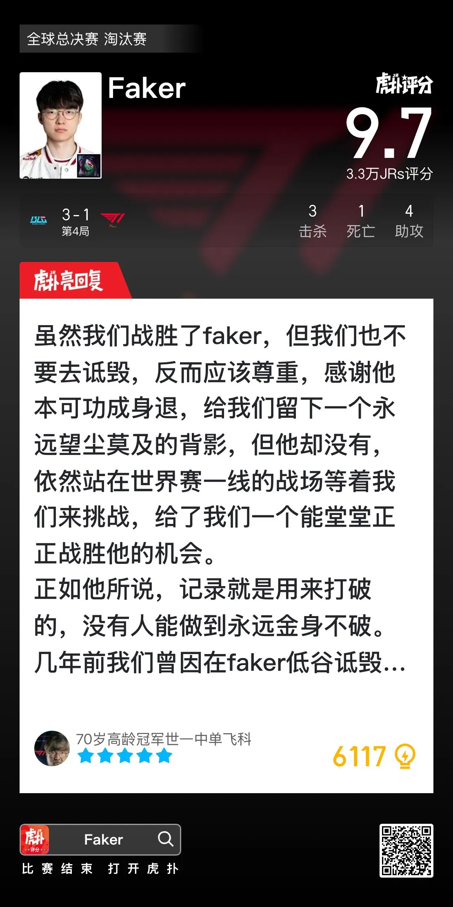

우리가 페이커를 이겼다고 해서 그를 깎아내려서는 안 됩니다. 오히려 존중하고 감사해야 합니다.
페이커는 이미 이룰 것을 다 이뤘기에 언제든 명예롭게 은퇴할 수 있었습니다.
그랬다면 우리는 평생 따라잡을 수 없는 그의 뒷모습만 바라봐야 했겠죠.
하지만 페이커는 은퇴하지 않았습니다. 여전히 월즈라는 최전선에서 우리의 도전을 기다리고 있습니다.
덕분에 우리는 그를 정정당당하게 꺾을 기회를 얻었습니다.
페이커 본인이 말했듯, 기록은 깨지기 위해 존재합니다. 그 누구도 영원히 무너지지 않을 수는 없습니다.
몇 년 전, 우리는 페이커가 부진했을 때 그를 비웃고 깎아내렸다가 결국 그 말들이 부메랑이 되어 돌아오는 경험을 했습니다.
그러니 내일 이 전설적인 선수를 꺾게 된다면, 오히려 더욱 겸손하고 차분하게 승리를 받아들이며 상대에 대한 존중을 잃지 않았으면 좋겠습니다.
마지막으로 페이커에게, 리그 오브 레전드를 지켜보는 모든 팬에게, 그리고 끝까지 싸우며 포기하지 않은 LPL 선수들에게 감사하다는 말을 전하고 싶습니다.
여러분이 있었기에 역사에 길이 남을 명경기들이 탄생할 수 있었습니다.
그 눈부신 순간들은 언젠가 우리 모두의 기억 속에 영원히 남을 전설이 될 것입니다.
제우스 돌아와라